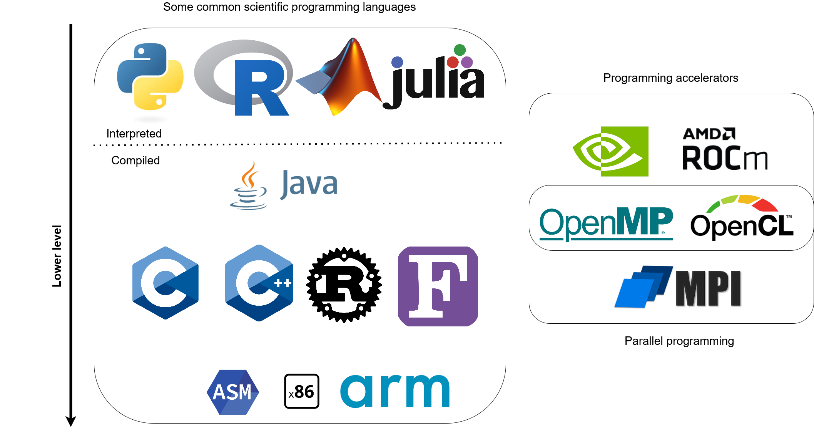
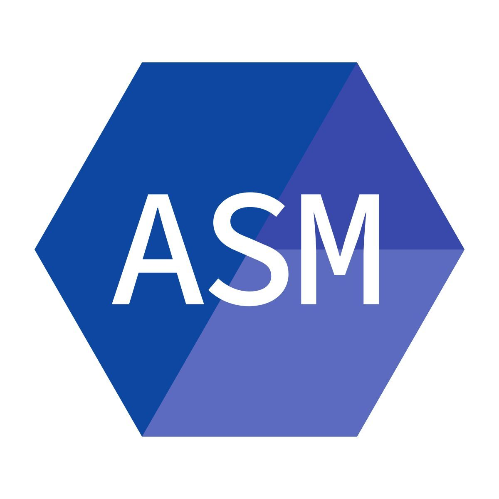
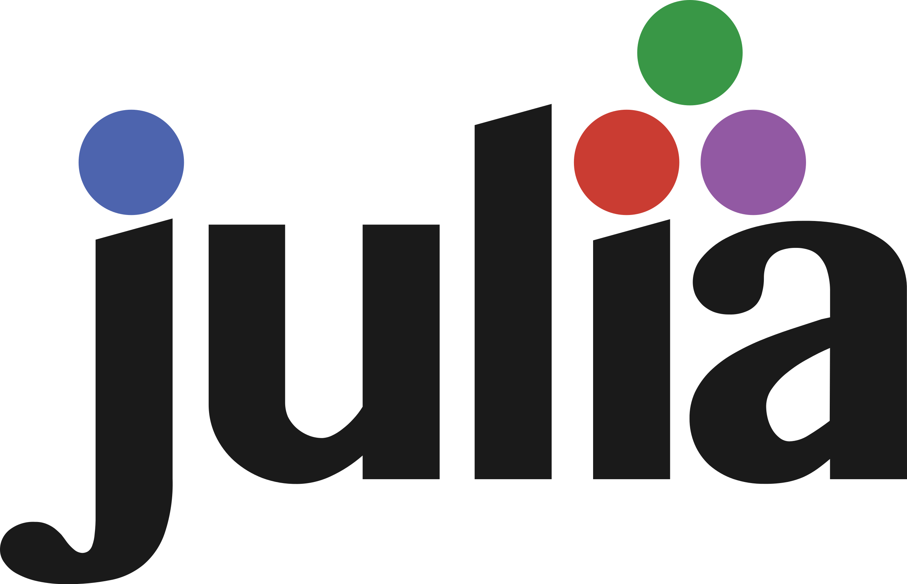

Introduction
Who am I?
Main lecturer: Steven Vandenbrande
- Member of the HPC Support Team of ICTS
- HPC (High Performance Computing):
KU Leuven offers Tier-2 cluster to researchers,
part of the Vlaams Supercomputer Centrum (VSC 1) - Background in molecular modeling
Support during hands-on sessions from Jan De Laet
Who are you?
Please present yourself:
- Your name
- Your scientific background
- Your programming background
- Why you want to learn scientific C
Practical aspects
- Four sessions of 3 hours (with a break)
- Course website:
https://stevenvdb.github.io/Scientific-C-for-programmers/ - Hands on: make sure you have a working C environment
First run of this course, feedback is much appreciated.
These slides are not intended as a reference manual, but to accompany a talk. A book like The C programming language is better suited as a reference.
Outline
Day 1
Introduction
- Motivation
- Context
- Course overview
Jumping in
- Hello, world
- Temperature conversion
- Logistic map
Day 2
Basics of C
- Types and operators
- Control flow
- Functions
Day 3
Advanced C
- Arrays and pointers
- Structures
- Input and output
Day 4
Beyond the core of C
- External libraries
- Segmentation faults
- C standards
Wrapping up
Motivation
Why learn to program in C?
Why learn to program in C?
Didn’t AI agents take over programming? In my opinion:
- AI agents are invaluable assistants
- Still benefit greatly from a prompter with expertise because:
- They will confidently write code that is wrong
- They will often produce sub-optimal code (speed, maintainability, …)
This opinion might be outdated very soon.
Why learn to program in C?
- Relatively low level, close to hardware
- Popular to write system software (OS for example)
- Gives insight into computer architecture
- Potentially gives good performance
- Fairly popular in scientific computing
- Small and stable language, syntax can be learned quickly
- Good basis to learn other programming languages
- You inherited a project written in C
- Not a good intrinsic motivation, but a reality
Context:
the landscape of
scientific programming
Scientific programming landscape

Assembly
- Very low level, essentially machine code in readable format
- Machine dependent, specific to each architecture
- Used in performance-critical parts of low-level libraries
- If you are not sure you need it, you don’t

The godbolt project gives a taste of what assembly looks like.
C
- First appeared in 1972, successor of B
- First standard in 1989, four revisions since
- Compiled language with static typing
- Small language and standard library
- Gives a lot of low-level control (e.g., memory management)

C++
- Extension of C, adding object-oriented features
- Compiled language with static typing
- Allows better and more complex project constructs
- More syntax and much larger standard library
- In principle retains all benefits from C,
in practice you program differently

Rust
- “Modern” version of C/C++
- Very different approach to memory management:
- C/C++ are prone to bugs causing safety issues
- Rust is proposed as an alternative, see DARPA: Translating all C to Rust
- Not as problematic for programs you run locally
- Ecosystem for scientific computing not as advanced as C/C++, but efforts are under way
- Example of a project for high-performance data manipulation: Polars dataframes

Fortran
- Fortran (Formula Translating System) appeared in 1957
- Compiled language with static typing
- Object-oriented features added in 2003 standard
- Still a lot of Fortran compilers produce fast code
- Good fit for mathematical applications
- Since the 2008 standard: coarrays as a built-in parallel programming model
Java
- Syntax influenced by C/C++, supports object orientation
- Source code compiled to Java bytecode which runs in virtual machine
- in principle slower code execution
- Memory safety and automatic garbage collection
- Quite often used in bio informatics

Scientific programming landscape 2
Julia
- Designed for technical and numerical computing
- Dynamically typed, supports multiple paradigms
- Scripted language with some support for compiling
- Designed for parallel computing

Python
- Scripting language, runs in Python interpreter
- Dynamically typed, garbage collection
- Perceived as easy to learn
- Not very efficient (unless actual work is done by C/Fortran)
- Popular in scientific computing, including machine learning 3
R
- Aimed at statistical computing and visualization
- Interpreted language, runs in R interpreter
- Similar in many aspects to Python
- Popular in some fields such as social sciences and economics

Matlab
- Proprietary numeric computing environment
- Extensive built-in functions for linear algebra, signal processing, optimization, and statistics

Scientific programming landscape
Programming accelerators
- Thus far: general-purpose programming languages for CPUs
- GPUs (originally for visualization) are well suited for scientific computing
- Require dedicated programming languages
- CUDA for NVIDIA GPUs
- ROCm for AMD GPUs
- OpenCL/OpenMP/… support multiple devices
Parallelization
- High performance computing (HPC) is all about parallelization
- Nearly all programming languages are inherently serial,
parallelization has to be added - Several paradigms:
- pthreads (OS level)
- OpenMP: shared-memory parallel programming in C/C++ and Fortran
- MPI: message passing interface for communication between processes
Scientific programming landscape
Conclusions:
- Knowing multiple languages is useful
- Allows you to use the right tool for the right job
- For example, C for computationally-intensive parts, Python for post processing
- Select a few languages in which you become an expert
- Look beyond intrinsic properties, the ecosystem and support is important
Course overview
What you will learn in this course
- the place of C in the landscape of scientific programming languages
- learn (most of) the C syntax 4
- write and run basic C programs with a focus on programming concepts encountered in science
- how to use external libraries when writing C code
What you will not learn in this course 5
- How to do HPC => HPC intro and Linux for HPC
- Build systems => CMake intro and Makefile intro
- Version control => Version control with git
- Optimizing code => Code optimization
- Debugging code => Defensive programming and debugging
- Parallel programming => Parallel programming
- Setting up an Integrated Development Environment (IDE)
What you will not learn in this course 6
The calendar of VSC Training sessions can be found at https://www.vscentrum.be/vsctraining. Learning paths that show connections between training sessions can be found at https://gjbex.github.io/Training-sessions.
Outline
Day 1
Introduction
- Motivation
- Context
- Course overview
Jumping in
- Hello, world
- Temperature conversion
- Logistic map
Day 2
Basics of C
- Types and operators
- Control flow
- Functions
Day 3
Advanced C
- Arrays and pointers
- Structures
- Input and output
Day 4
Beyond the core of C
- External libraries
- Segmentation faults
- C standards
Wrapping up
Footnotes
The line between compiled and interpreted is not as clear as indicated in this picture↩︎
The heavy computational lifting is usually not done in Python↩︎
Based on “The C Programming Language” second edition by Kernighan and Ritchie↩︎
Do not worry if you currently do not understand all terminology, we will come back to this at the end of the course↩︎
Do not worry if you currently do not understand all terminology, we will come back to this at the end of the course↩︎